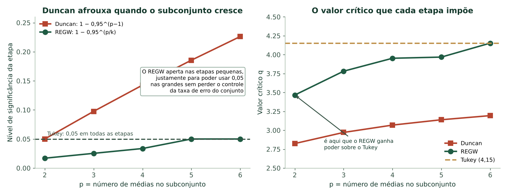
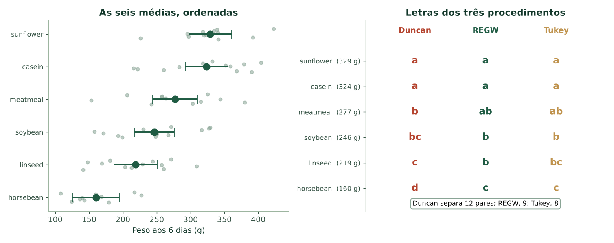

Ryan–Einot–Gabriel–Welsch (REGW)
Procedimento descendente de comparações múltiplas que ganha poder sobre o Tukey sem abrir mão do controle da taxa de erro do conjunto.
Comece por aqui
O procedimento de Tukey usa o mesmo valor crítico para todas as comparações: o que protege a maior delas. Isso é seguro, mas desperdiça poder nas comparações entre médias vizinhas, que não precisam de uma régua tão longa. Os procedimentos descendentes tentam recuperar esse poder testando primeiro os blocos grandes e só depois os pequenos — e o REGW é o único da família que faz isso sem perder o controle da taxa de erro do conjunto.
O teste de Newman–Keuls, proposto nos anos 1950, já testava blocos do maior para o menor, mas usava 0,05 em todas as etapas — e com isso perde o controle da taxa de erro quando há mais de três grupos. Ryan (1960), Einot e Gabriel (1975) e Welsch (1977) mostraram qual nível usar em cada etapa para que a proteção se mantenha. O resultado é o procedimento descendente correto.
O que é o procedimento
As \(k\) médias são ordenadas. Testa-se primeiro se o bloco inteiro é homogêneo; se for, o procedimento para e nenhuma média difere de nenhuma outra. Se não for, passa-se aos dois blocos de \(k-1\) médias consecutivas, e assim por diante, até os pares. A regra decisiva é a regra de parada: um subconjunto só é testado se nenhum bloco que o contém já tiver sido declarado homogêneo.

Se um bloco de \(p\) médias é de fato homogêneo, há no máximo \(k/p\) blocos disjuntos desse tamanho que poderiam ser testados. Ryan percebeu que distribuir o erro entre eles — isto é, usar um nível individual tal que \((1-\alpha_p)^{k/p}=1-\alpha\) — basta para proteger o conjunto. Einot e Gabriel mostraram que para \(p=k\) e \(p=k-1\) pode-se usar o próprio \(\alpha\) sem prejuízo, e Welsch provou a validade do procedimento resultante.
Pressupostos e como verificá-los
| Pressuposto | Por que importa | Como verificar |
|---|---|---|
| Observações independentes | O mesmo da ANOVA. | Delineamento. |
| Resíduos aproximadamente normais | Sustenta a amplitude estudentizada. | shapiro.test(residuals(modelo)). |
| Variâncias homogêneas | O procedimento usa um único QM do resíduo. | Levene e Brown-Forsythe; se falhar, Games–Howell. |
| Grupos balanceados (preferível) | Com n desiguais o procedimento usa o erro-padrão de cada par, e o controle fica aproximado. | table(grupo). |
| Comparações pareadas entre médias | É para isso que ele serve. | Para contrastes gerais, Bonferroni ou Scheffé. |
| Interesse em decidir quais pares diferem | O procedimento não fornece intervalos de confiança. | Se precisar de intervalos, use Tukey. |
Como todo procedimento descendente, o REGW devolve apenas decisões — não há intervalo de confiança simultâneo associado. Isso é consequência da própria estrutura: o valor crítico de um par depende de quais blocos foram testados antes. Quando o relatório precisa de estimativas com margem de erro, e não apenas de letras, o Tukey é a escolha.
Hipóteses e estatística de teste
A cada etapa testa-se a homogeneidade de um subconjunto, mantendo a taxa de erro do conjunto sob controle:
Em que:
- \(S\)
- subconjunto de p médias consecutivas na ordenação
- \(p\)
- número de médias no subconjunto
- \(k\)
- número total de grupos
- \(\alpha_p\)
- nível de significância da etapa
- \(\bar{y}_{(1)},\ \bar{y}_{(p)}\)
- maior e menor médias do subconjunto
- \(\bar{y}_S\)
- média ponderada do subconjunto
- \(\nu\)
- graus de liberdade do resíduo
Exemplo numérico, passo a passo
Com os dados das seis rações (QM do resíduo = 3 008,554 e 65 graus de liberdade), os níveis e os valores críticos de cada etapa:
| p | α_p do REGW | q crítico | F crítico | q de Tukey (referência) |
|---|---|---|---|---|
| 2 | 0,016952 | 3,4660 | 6,0065 | 4,1527 |
| 3 | 0,025321 | 3,7816 | 3,8921 | 4,1527 |
| 4 | 0,033617 | 3,9526 | 3,0767 | 4,1527 |
| 5 | 0,050000 | 3,9680 | 2,5130 | 4,1527 |
| 6 | 0,050000 | 4,1527 | 2,3560 | 4,1527 |
A ordem das médias é sunflower (328,92) > casein (323,58) > meatmeal (276,91) > soybean (246,43) > linseed (218,75) > horsebean (160,20).
- p = 6: o bloco inteiro dá q = 10,159 contra 4,1527. Heterogêneo; continua.
- p = 5: os dois blocos dão q = 6,958 e 9,838 contra 3,9680. Ambos heterogêneos.
- p = 4: os três blocos dão q = 5,406, 6,621 e 6,887 contra 3,9526. Todos heterogêneos.
- p = 3: sunflower–casein–meatmeal dá q = 3,212 contra 3,7816: homogêneo, e o procedimento para nesse ramo. O bloco casein–meatmeal–soybean dá 5,057: heterogêneo. O bloco meatmeal–soybean–linseed dá 3,592: homogêneo. O bloco soybean–linseed–horsebean dá 5,370: heterogêneo.
- p = 2: quatro dos cinco pares vizinhos já estão dentro de blocos homogêneos e não são testados. Resta linseed–horsebean, com q = 3,526 contra 3,4660: heterogêneo.
Resultado: nove dos quinze pares diferem. O par linseed–horsebean, que o Tukey não separa (p = 0,1413), é separado aqui, porque na etapa p = 2 a exigência é 3,4660 e não 4,1527.
REGWQ e REGWF
As duas variantes diferem apenas na estatística usada para julgar o subconjunto: a amplitude entre as médias extremas (REGWQ) ou a estatística F calculada sobre todas as médias do bloco (REGWF). A primeira é mais sensível a um bloco em que as extremas se afastam; a segunda, a um bloco em que a dispersão está distribuída. Nos dados deste exemplo as duas chegam exatamente ao mesmo resultado, o que é o caso típico.
Propriedades
- Controla a taxa de erro do conjunto no sentido forte, ao contrário de Newman–Keuls e Duncan.
- É mais poderoso que o Tukey: nunca declara menos pares diferentes, e às vezes declara mais.
- Não fornece intervalos de confiança simultâneos.
- As letras resultantes podem, em casos raros, ser não transitivas — A não difere de B, B não difere de C, mas A difere de C é possível em Tukey e não aqui, porque a regra de parada o impede.
- Com k = 2 reduz-se ao teste t comum; com k = 3, α_p = α em todas as etapas e ele coincide com Newman–Keuls.
- A versão para variâncias desiguais não é padrão; nesse caso, Games–Howell.
Como interpretar os resultados
| Elemento | O que informa | Cuidado |
|---|---|---|
| Sequência de etapas | O caminho percorrido pelo procedimento. | A regra de parada é o que o torna válido. |
| Blocos homogêneos | Conjuntos de médias que não se separam. | São eles que geram as letras. |
| Letras | Resumo final. | Compartilhar letra é ausência de evidência de diferença. |
| Ausência de intervalos | Consequência da estrutura descendente. | Apresente as médias com IC individuais ao lado. |
| Comparação com Tukey | Quantos pares a mais foram separados. | Costuma ser um ou dois. |
Reporte: o procedimento usado (REGWQ ou REGWF), o quadro de letras, as médias com erros-padrão e, quando a diferença em relação ao Tukey for relevante, os dois resultados.
Como executar no R e em Python
Onde executar o código em Python
Não é preciso instalar nada: o Google Colab é um computador na nuvem, gratuito, que executa Python pelo navegador e já traz as bibliotecas usadas aqui (numpy, scipy e matplotlib).
Não há função no R base. agricolae::REGW.test() é a rota mais direta e devolve o quadro de letras pronto; o mesmo pacote traz HSD.test, duncan.test, LSD.test e SNK.test, o que permite comparar os procedimentos com a mesma sintaxe. PMCMRplus::regwqTest() implementa a versão com amplitude estudentizada. qtukey() e qf(), do pacote stats, dão os valores críticos de cada etapa, caso se queira reproduzir o procedimento manualmente.
modelo <- aov(weight ~ feed, data = chickwts)
agricolae::REGW.test(modelo, "feed", console = TRUE)
Exemplo de aplicação
Contexto dos dados
chickwts registra o peso, aos seis dias, de 71 pintinhos alimentados com seis rações diferentes. Os grupos têm tamanhos ligeiramente desiguais (de 10 a 14 aves), os resíduos passam no teste de normalidade (p = 0,627) e as variâncias são homogêneas (Brown–Forsythe p = 0,590). A ANOVA devolve F(5; 65) = 15,365 com p = 5,9 × 10⁻¹⁰: há diferença, e a pergunta passa a ser onde. Com seis rações são quinze comparações — e é esse número que cria o problema de multiplicidade. As fichas de Bonferroni, Šidák, Tukey e Games–Howell usam este mesmo conjunto, para que os resultados possam ser comparados diretamente.
Código em R
# Procedimento de Ryan-Einot-Gabriel-Welsch: exemplo completo ----
# Pacotes: agricolae (REGW.test), PMCMRplus, mutoss. Base: stats
# install.packages(c("agricolae", "PMCMRplus", "mutoss"))
# 1. Dados: chickwts, peso de pintinhos por tipo de ração
data(chickwts)
modelo <- aov(weight ~ feed, data = chickwts)
summary(modelo)
k <- nlevels(chickwts$feed); gl <- df.residual(modelo)
QM <- sum(residuals(modelo)^2) / gl
sort(tapply(chickwts$weight, chickwts$feed, mean), decreasing = TRUE)
# 2. Os níveis de significância de cada etapa
alfa <- 0.05
p <- 2:k
alfa_regw <- ifelse(p >= k - 1, alfa, 1 - (1 - alfa)^(p / k))
data.frame(p,
alfa_regw,
q_regw = qtukey(1 - alfa_regw, p, gl),
alfa_duncan = 1 - (1 - alfa)^(p - 1),
q_duncan = qtukey((1 - alfa)^(p - 1), p, gl),
q_tukey = qtukey(1 - alfa, k, gl))
# 3. O procedimento, com agricolae
library(agricolae)
REGW.test(modelo, "feed", console = TRUE)
# comparando com os demais, no mesmo pacote:
HSD.test(modelo, "feed", console = TRUE) # Tukey
duncan.test(modelo, "feed", console = TRUE) # Duncan
LSD.test(modelo, "feed", console = TRUE) # sem ajuste
# 4. Versão com estatística F (REGWF) e versão com amplitude (REGWQ)
library(PMCMRplus)
summary(regwqTest(weight ~ feed, data = chickwts)) # REGWQ
# a variante REGWF usa a estatística F do subconjunto em vez da amplitude
# 5. Reproduzindo o passo descendente à mão, para entender o mecanismo
medias <- sort(tapply(chickwts$weight, chickwts$feed, mean), decreasing = TRUE)
ns <- table(chickwts$feed)[names(medias)]
for (pp in k:2) {
for (a in 1:(k - pp + 1)) {
bloco <- names(medias)[a:(a + pp - 1)]
i <- bloco[1]; j <- bloco[pp]
ep <- sqrt(QM / 2 * (1/ns[i] + 1/ns[j]))
q <- abs(medias[i] - medias[j]) / ep
ac <- if (pp >= k - 1) alfa else 1 - (1 - alfa)^(pp / k)
cat(sprintf("p=%d %-42s q=%6.3f critico=%6.3f %s\n",
pp, paste(bloco, collapse = " > "), q, qtukey(1 - ac, pp, gl),
ifelse(q > qtukey(1 - ac, pp, gl), "heterogeneo", "HOMOGENEO")))
}
}
# Atenção: a regra de parada (não testar subconjuntos contidos em um bloco já
# declarado homogêneo) é essencial e NÃO está neste laço simplificado.
# 6. Gráfico
par(mar = c(5, 8, 4, 2))
bp <- barplot(medias, horiz = TRUE, las = 1, col = "gray85", xlim = c(0, 420),
xlab = "Peso aos 6 dias (g)")
eps <- sqrt(QM / ns)
arrows(medias - 1.96 * eps, bp, medias + 1.96 * eps, bp, angle = 90, code = 3, length = 0.05)
par(mar = c(5, 4, 4, 2))
A mesma análise em Python, com os resultados
Cole o código em um notebook do Google Colab ↗ e execute com Shift+Enter. Os valores abaixo são a saída desse código.
# Bibliotecas: numpy, scipy e matplotlib (já instaladas no Google Colab)
import numpy as np
from scipy import stats
import itertools
# Dados: chickwts (R). Peso (g) de 71 pintinhos aos 6 dias, segundo seis rações.
# É o mesmo conjunto das fichas de Bonferroni, Šidák, Tukey e Duncan.
dados = {
"horsebean": [179,160,136,227,217,168,108,124,143,140],
"linseed": [309,229,181,141,260,203,148,169,213,257,244,271],
"soybean": [243,230,248,327,329,250,193,271,316,267,199,171,158,248],
"sunflower": [423,340,392,339,341,226,320,295,334,322,297,318],
"meatmeal": [325,257,303,315,380,153,263,242,206,344,258],
"casein": [368,390,379,260,404,318,352,359,216,222,283,332]}
nomes = list(dados)
gs = [np.array(v, float) for v in dados.values()]
k = len(gs); ns = np.array([len(g) for g in gs], float); N = int(ns.sum())
medias = np.array([g.mean() for g in gs]); vars_ = np.array([g.var(ddof=1) for g in gs])
QM = np.sum((ns - 1) * vars_) / (N - k); gl = N - k
alfa = 0.05
ordem = np.argsort(-medias) # do maior para o menor
print("ração n média DP")
for i in ordem:
print(f"{nomes[i]:<12}{int(ns[i]):2d} {medias[i]:7.3f} {np.sqrt(vars_[i]):6.2f}")
print(f"\nANOVA: F({k-1}; {gl}) = {stats.f_oneway(*gs)[0]:.4f}, p = {stats.f_oneway(*gs)[1]:.3e}")
print(f"QM do resíduo = {QM:.4f} | gl = {gl}")
# 1. O nível de significância que o REGW usa em cada etapa
def alfa_regw(p, k, alfa=0.05):
return alfa if p >= k - 1 else 1 - (1 - alfa)**(p / k)
print("\nNíveis de significância por etapa (p = número de médias no subconjunto)")
print(" p alfa_p (REGW) q crítico F crítico q de Tukey (referência)")
for p in range(2, k + 1):
ap = alfa_regw(p, k)
print(f" {p} {ap:.6f} {stats.studentized_range.ppf(1-ap, p, gl):8.4f} "
f"{stats.f.ppf(1-ap, p-1, gl):8.4f} {stats.studentized_range.ppf(1-alfa, k, gl):10.4f}")
print("Para p = k e p = k-1 o nível é o próprio alfa; abaixo disso ele é reduzido,")
print("de modo que a taxa de erro do conjunto permanece controlada.")
# 2. O procedimento descendente
def passo_descendente(estatistica):
"""Testa subconjuntos de médias consecutivas, do maior para o menor.
Um subconjunto só é testado se nenhum subconjunto que o contém foi declarado homogêneo."""
difere = np.zeros((k, k), bool)
homogeneos = []
passos = []
for p in range(k, 1, -1):
for a in range(0, k - p + 1):
bloco = ordem[a:a + p]
cj = frozenset(bloco)
if any(cj <= h for h in homogeneos):
passos.append((p, [nomes[i] for i in bloco], None, None, "não testado"))
continue
est, crit = estatistica(bloco, p)
if est > crit:
difere[bloco[0], bloco[-1]] = difere[bloco[-1], bloco[0]] = True
passos.append((p, [nomes[i] for i in bloco], est, crit, "heterogêneo"))
else:
homogeneos.append(cj)
passos.append((p, [nomes[i] for i in bloco], est, crit, "HOMOGÊNEO: para aqui"))
return difere, homogeneos, passos
def est_q(bloco, p):
i, j = bloco[0], bloco[-1]
ep = np.sqrt(QM / 2 * (1/ns[i] + 1/ns[j]))
return abs(medias[i] - medias[j]) / ep, stats.studentized_range.ppf(1 - alfa_regw(p, k), p, gl)
def est_F(bloco, p):
mb = np.sum(ns[bloco] * medias[bloco]) / np.sum(ns[bloco])
SQ = np.sum(ns[bloco] * (medias[bloco] - mb)**2)
return (SQ / (p - 1)) / QM, stats.f.ppf(1 - alfa_regw(p, k), p - 1, gl)
for titulo, est in [("REGWQ (amplitude estudentizada)", est_q), ("REGWF (estatística F)", est_F)]:
print(f"\n{titulo}")
dif, hom, passos = passo_descendente(est)
print(f"{'p':>2} {'subconjunto (do maior ao menor)':<52}{'est.':>8}{'crítico':>9} situação")
for p, bl, e, c, sit in passos:
bls = " > ".join(bl)
if e is None:
print(f"{p:>2} {bls:<52}{'':>8}{'':>9} {sit}")
else:
print(f"{p:>2} {bls:<52}{e:8.4f}{c:9.4f} {sit}")
# conjuntos homogêneos maximais -> pares que NÃO diferem
naodifere = np.zeros((k, k), bool)
for h in hom:
for x, y in itertools.combinations(h, 2):
naodifere[x, y] = naodifere[y, x] = True
pares = [(nomes[a], nomes[b]) for a, b in itertools.combinations(range(k), 2) if not naodifere[a, b]]
print(f"Pares que diferem: {len(pares)}")
print(" " + "; ".join(f"{b} - {a}" for a, b in pares))
# 3. Comparação com os demais procedimentos
print("\nComparação dos procedimentos (número de pares declarados diferentes, de 15)")
tuk = [(a, b) for a, b in itertools.combinations(range(k), 2)
if stats.studentized_range.sf(abs(medias[b]-medias[a])/np.sqrt(QM/2*(1/ns[a]+1/ns[b])), k, gl) < alfa]
lsd = [(a, b) for a, b in itertools.combinations(range(k), 2)
if 2*stats.t.sf(abs(medias[b]-medias[a])/np.sqrt(QM*(1/ns[a]+1/ns[b])), gl) < alfa]
dif_q, hom_q, _ = passo_descendente(est_q)
dif_f, hom_f, _ = passo_descendente(est_F)
def conta(hom):
nd = np.zeros((k, k), bool)
for h in hom:
for x, y in itertools.combinations(h, 2): nd[x, y] = nd[y, x] = True
return sum(1 for a, b in itertools.combinations(range(k), 2) if not nd[a, b])
print(f" LSD (sem ajuste): {len(lsd)}")
print(f" Duncan: 12 (ver a ficha do teste de Duncan)")
print(f" REGWQ: {conta(hom_q)}")
print(f" REGWF: {conta(hom_f)}")
print(f" Tukey: {len(tuk)}")
print(" Bonferroni: 8")
# 4. O que o REGW encontra e o Tukey não
nd = np.zeros((k, k), bool)
for h in hom_q:
for x, y in itertools.combinations(h, 2): nd[x, y] = nd[y, x] = True
extra = [(a, b) for a, b in itertools.combinations(range(k), 2)
if not nd[a, b] and (a, b) not in tuk]
print("\nPares em que REGWQ difere do Tukey:")
for a, b in extra:
pt = stats.studentized_range.sf(abs(medias[b]-medias[a])/np.sqrt(QM/2*(1/ns[a]+1/ns[b])), k, gl)
print(f" {nomes[b]} - {nomes[a]}: diferença = {medias[b]-medias[a]:+.2f} g | "
f"p de Tukey = {pt:.4f} | declarado significativo pelo REGWQ")
# 5. Simulação da taxa de erro do conjunto
print("\nSimulação: 10.000 experimentos com 6 grupos de médias IGUAIS (n = 12 cada)")
rng = np.random.default_rng(99)
M = 10000
glr = 6 * 11
q_tuk = stats.studentized_range.ppf(1 - alfa, 6, glr)
t_lsd = stats.t.ppf(1 - alfa/2, glr)
q_reg = {p: stats.studentized_range.ppf(1 - alfa_regw(p, 6), p, glr) for p in range(2, 7)}
q_dun = {p: stats.studentized_range.ppf(0.95**(p-1), p, glr) for p in range(2, 7)}
cont = dict(lsd=0, duncan=0, regwq=0, tukey=0)
G = rng.normal(0, 1, (M, 6, 12))
MM = G.mean(axis=2); VV = G.var(axis=2, ddof=1).mean(axis=1)
EP = np.sqrt(VV / 12)
for e in range(M):
mm = MM[e]; ep = EP[e]
ordm = np.argsort(-mm)
dif = np.abs(mm[:, None] - mm[None, :]) / ep
iu = np.triu_indices(6, 1)
if (dif[iu] / np.sqrt(2) > t_lsd).any(): cont['lsd'] += 1
if (dif[iu] > q_tuk).any(): cont['tukey'] += 1
for chave, qc in (('regwq', q_reg), ('duncan', q_dun)):
achou = False; hom = []
for p in range(6, 1, -1):
for a in range(0, 7 - p):
bl = ordm[a:a+p]; cj = frozenset(bl)
if any(cj <= h for h in hom): continue
if dif[bl[0], bl[-1]] > qc[p]: achou = True
else: hom.append(cj)
if achou: cont[chave] += 1
for nome, c in [("LSD (sem ajuste)", cont['lsd']), ("Duncan", cont['duncan']),
("REGWQ", cont['regwq']), ("Tukey", cont['tukey'])]:
print(f" {nome:<18}{100*c/M:5.2f}% dos experimentos com ao menos um falso positivo")
print(" (o alvo é 5%; Duncan fica claramente acima, REGWQ e Tukey ficam no alvo)")
Resultados da execução
ração n média DP sunflower 12 328.917 48.84 casein 12 323.583 64.43 meatmeal 11 276.909 64.90 soybean 14 246.429 54.13 linseed 12 218.750 52.24 horsebean 10 160.200 38.63 ANOVA: F(5; 65) = 15.3648, p = 5.936e-10 QM do resíduo = 3008.5542 | gl = 65 Níveis de significância por etapa (p = número de médias no subconjunto) p alfa_p (REGW) q crítico F crítico q de Tukey (referência) 2 0.016952 3.4660 6.0065 4.1527 3 0.025321 3.7816 3.8921 4.1527 4 0.033617 3.9526 3.0767 4.1527 5 0.050000 3.9680 2.5130 4.1527 6 0.050000 4.1527 2.3560 4.1527 Para p = k e p = k-1 o nível é o próprio alfa; abaixo disso ele é reduzido, de modo que a taxa de erro do conjunto permanece controlada. REGWQ (amplitude estudentizada) p subconjunto (do maior ao menor) est. crítico situação 6 sunflower > casein > meatmeal > soybean > linseed > horsebean 10.1595 4.1527 heterogêneo 5 sunflower > casein > meatmeal > soybean > linseed 6.9576 3.9680 heterogêneo 5 casein > meatmeal > soybean > linseed > horsebean 9.8384 3.9680 heterogêneo 4 sunflower > casein > meatmeal > soybean 5.4062 3.9526 heterogêneo 4 casein > meatmeal > soybean > linseed 6.6208 3.9526 heterogêneo 4 meatmeal > soybean > linseed > horsebean 6.8870 3.9526 heterogêneo 3 sunflower > casein > meatmeal 3.2124 3.7816 HOMOGÊNEO: para aqui 3 casein > meatmeal > soybean 5.0567 3.7816 heterogêneo 3 meatmeal > soybean > linseed 3.5923 3.7816 HOMOGÊNEO: para aqui 3 soybean > linseed > horsebean 5.3696 3.7816 heterogêneo 2 sunflower > casein não testado 2 casein > meatmeal não testado 2 meatmeal > soybean não testado 2 soybean > linseed não testado 2 linseed > horsebean 3.5257 3.4660 heterogêneo Pares que diferem: 9 linseed - horsebean; soybean - horsebean; sunflower - horsebean; meatmeal - horsebean; casein - horsebean; sunflower - linseed; casein - linseed; sunflower - soybean; casein - soybean REGWF (estatística F) p subconjunto (do maior ao menor) est. crítico situação 6 sunflower > casein > meatmeal > soybean > linseed > horsebean 15.3648 2.3560 heterogêneo 5 sunflower > casein > meatmeal > soybean > linseed 9.3182 2.5130 heterogêneo 5 casein > meatmeal > soybean > linseed > horsebean 13.7213 2.5130 heterogêneo 4 sunflower > casein > meatmeal > soybean 6.6363 3.0767 heterogêneo 4 casein > meatmeal > soybean > linseed 8.1140 3.0767 heterogêneo 4 meatmeal > soybean > linseed > horsebean 8.6489 3.0767 heterogêneo 3 sunflower > casein > meatmeal 3.0802 3.8921 HOMOGÊNEO: para aqui 3 casein > meatmeal > soybean 6.4263 3.8921 heterogêneo 3 meatmeal > soybean > linseed 3.2262 3.8921 HOMOGÊNEO: para aqui 3 soybean > linseed > horsebean 7.2988 3.8921 heterogêneo 2 sunflower > casein não testado 2 casein > meatmeal não testado 2 meatmeal > soybean não testado 2 soybean > linseed não testado 2 linseed > horsebean 6.2152 6.0065 heterogêneo Pares que diferem: 9 linseed - horsebean; soybean - horsebean; sunflower - horsebean; meatmeal - horsebean; casein - horsebean; sunflower - linseed; casein - linseed; sunflower - soybean; casein - soybean Comparação dos procedimentos (número de pares declarados diferentes, de 15) LSD (sem ajuste): 12 Duncan: 12 (ver a ficha do teste de Duncan) REGWQ: 9 REGWF: 9 Tukey: 8 Bonferroni: 8 Pares em que REGWQ difere do Tukey: linseed - horsebean: diferença = +58.55 g | p de Tukey = 0.1413 | declarado significativo pelo REGWQ Simulação: 10.000 experimentos com 6 grupos de médias IGUAIS (n = 12 cada) LSD (sem ajuste) 35.18% dos experimentos com ao menos um falso positivo Duncan 22.47% dos experimentos com ao menos um falso positivo REGWQ 4.74% dos experimentos com ao menos um falso positivo Tukey 4.74% dos experimentos com ao menos um falso positivo (o alvo é 5%; Duncan fica claramente acima, REGWQ e Tukey ficam no alvo)

| Elemento | Valor | Leitura |
|---|---|---|
| Pares separados pelo REGWQ | 9 de 15 | — |
| Pares separados pelo REGWF | 9 de 15 | Resultado idêntico ao do REGWQ. |
| Pares separados pelo Tukey | 8 de 15 | — |
| Pares separados pelo Duncan | 12 de 15 | Sem controle da taxa de erro. |
| Pares separados sem ajuste (LSD) | 12 de 15 | — |
| O par que o REGW acrescenta | linseed − horsebean: +58,55 g | p de Tukey = 0,1413. |
| Letras do REGW | a / a / ab / b / b / c | Para sunflower, casein, meatmeal, soybean, linseed, horsebean. |
| Letras do Tukey | a / a / ab / b / bc / c | A linhaça muda de bloco. |
| Simulação: LSD | 35,18% de falsos positivos | — |
| Simulação: Duncan | 22,47% | — |
| Simulação: REGWQ | 4,74% | Dentro do alvo. |
| Simulação: Tukey | 4,74% | Idêntico. |
Leitura: o REGW separa a linhaça do feijão-de-cavalo, o que o Tukey não faz. A diferença entre eles é de 58,55 g, com p de Tukey igual a 0,1413 — um resultado de fronteira. O REGW chega a essa conclusão porque, ao testar esse par, já havia estabelecido que ele não pertence a nenhum bloco homogêneo maior, e por isso pode usar um critério menos exigente.
Vale observar o que a simulação mostra: REGWQ e Tukey têm exatamente a mesma taxa de erro do conjunto nos experimentos simulados — 4,74% em 10.000 repetições. O REGW, portanto, não compra poder vendendo proteção: ele obtém poder adicional de graça, usando a informação de que certos blocos já foram descartados. Essa é a diferença essencial em relação ao Duncan, que compra poder justamente abrindo mão da proteção.
O preço é a ausência de intervalos de confiança. Num relatório de experimentação agrícola em que a apresentação é feita por letras, o REGW é uma escolha defensável e um pouco mais sensível que o Tukey. Num relatório em que se queira dizer quanto uma ração supera a outra, com margem de erro, o Tukey continua sendo o instrumento adequado.
Erros comuns
| Erro | Como evitar |
|---|---|
| Confundir com Newman–Keuls (SNK) | O SNK usa α em todas as etapas e não controla a taxa de erro do conjunto. |
| Implementar sem a regra de parada | Sem ela, o procedimento perde a validade. |
| Procurar intervalos de confiança na saída | Procedimentos descendentes não os fornecem. |
| Usar com variâncias desiguais | Depende de um QM do resíduo comum. |
| Aplicar a contrastes que não são pares | Serve só para comparações pareadas. |
| Apresentar só as letras | Mostre também as médias e seus erros-padrão. |
| Esperar grande diferença em relação ao Tukey | O ganho costuma ser de um ou dois pares. |
| Escolher o procedimento depois de ver qual dá mais significativos | A escolha é metodológica, feita antes. |
Alternativas e fluxo de trabalho
| Procedimento | Quando preferir |
|---|---|
| Tukey–Kramer | Quando forem necessários intervalos de confiança simultâneos. |
| Newman–Keuls (SNK) | Nunca, se o objetivo é controlar a taxa de erro do conjunto; é o REGW sem a correção. |
| Duncan | Quando se aceita explicitamente uma taxa de erro maior; ver as ressalvas na ficha. |
| Bonferroni ou Holm | Famílias que não são comparações pareadas. |
| Dunnett | Todos os tratamentos contra um controle. |
| Games–Howell | Variâncias heterogêneas. |
| Scheffé | Contrastes decididos depois de ver os dados. |
| Contrastes planejados | Perguntas definidas antes do experimento. |
- Ajuste a ANOVA e verifique os pressupostos.
- Confirme a homogeneidade de variâncias.
- Decida se o relatório precisa de intervalos: se precisar, use Tukey.
- Aplique o REGW e examine a sequência de etapas, não apenas as letras.
- Apresente as médias com erros-padrão ao lado do quadro de letras.
- Se houver diferença em relação ao Tukey, informe os dois resultados.
Referências desta ficha
- RYAN, Thomas A. Significance tests for multiple comparison of proportions, variances, and other statistics. Psychological Bulletin, v. 57, n. 4, p. 318-328, 1960.
- EINOT, Israel; GABRIEL, K. Ruben. A study of the powers of several methods of multiple comparisons. Journal of the American Statistical Association, v. 70, n. 351, p. 574-583, 1975.
- WELSCH, Roy E. Stepwise multiple comparison procedures. Journal of the American Statistical Association, v. 72, n. 359, p. 566-575, 1977.
- NEWMAN, D. The distribution of range in samples from a normal population, expressed in terms of an independent estimate of standard deviation. Biometrika, v. 31, n. 1-2, p. 20-30, 1939.
- KEULS, M. The use of the "studentized range" in connection with an analysis of variance. Euphytica, v. 1, n. 2, p. 112-122, 1952.
- SEAMAN, Michael A.; LEVIN, Joel R.; SERLIN, Ronald C. New developments in pairwise multiple comparisons: some powerful and practicable procedures. Psychological Bulletin, v. 110, n. 3, p. 577-586, 1991.
- HOCHBERG, Yosef; TAMHANE, Ajit C. Multiple comparison procedures. New York: Wiley, 1987.
- BRETZ, Frank; HOTHORN, Torsten; WESTFALL, Peter. Multiple comparisons using R. Boca Raton: Chapman and Hall/CRC, 2010.
- MONTGOMERY, Douglas C. Design and analysis of experiments. 10. ed. Hoboken: Wiley, 2019.
- ANÓNIMO. Biometrika table. Biometrika, v. 35, p. 214, 1948; ver McNEIL, Donald R. Interactive data analysis. New York: Wiley, 1977. (Fonte dos dados
chickwts.) - R CORE TEAM. R: a language and environment for statistical computing. Vienna: R Foundation for Statistical Computing, 2026. Disponível em: https://www.r-project.org/. (Funções
qtukeyeqf, pacotestats.) - DE MENDIBURU, Felipe. agricolae: statistical procedures for agricultural research. R package. Disponível em: https://CRAN.R-project.org/package=agricolae. (Função
REGW.test.) - POHLERT, Thorsten. PMCMRplus: calculate pairwise multiple comparisons of mean rank sums extended. R package. Disponível em: https://CRAN.R-project.org/package=PMCMRplus. (Função
regwqTest.) - POSIT TEAM. RStudio: integrated development environment for R. Boston: Posit Software, PBC. Disponível em: https://posit.co/download/rstudio-desktop/.
- VIRTANEN, Pauli et al. SciPy 1.0: fundamental algorithms for scientific computing in Python. Nature Methods, v. 17, p. 261-272, 2020. DOI: 10.1038/s41592-019-0686-2. (Funções do módulo
scipy.stats.) - HARRIS, Charles R. et al. Array programming with NumPy. Nature, v. 585, p. 357-362, 2020. DOI: 10.1038/s41586-020-2649-2.
- HUNTER, John D. Matplotlib: a 2D graphics environment. Computing in Science & Engineering, v. 9, n. 3, p. 90-95, 2007.
- GOOGLE. Google Colaboratory. Disponível em: https://colab.research.google.com/.
- As figuras desta ficha foram elaboradas pelo autor.

Prof. Dr. Cássius Henrique Xavier Oliveira
Professor · ICTIN/UFLA · Estatística, Confiabilidade e Ciência de Dados.
Conheça minha trajetória e projetos →